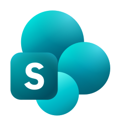

Client 01
Luma Hotels
Guest appMobile check-in · Friday launch
LeahProject manager
 ChatGPTTurned the scope into a launch plan.
ChatGPTTurned the scope into a launch plan.Launch specialist · Mon–FriAlex · 40 hours

Word scope in SharePointForma Digital · Customer app launches · November 9–13
Forma Digital builds customer apps. Two project managers have prepared next week’s launch plans with AI.
ChatGPTTurned the scope into a launch plan.
Word scope in SharePoint CopilotTurned the Teams recap into a launch plan.
CopilotTurned the Teams recap into a launch plan.Project plan from Teams
You’re the COO. Would you confirm both launch dates?
One commitment has to change. Otherwise a launch can slip, another team loses capacity, or extra help costs money.
Who discovers this collision in your company—and when?
Extract the person, week, work and required skill from the scope and Teams recap.
Match Alex across the plans and Maya’s Kantata export. Flag 80 hours requested against 40 available.
Propose Jamie for Rally. Keep the two project plans and the resource update tied to that approval.
Proposed change · Rally Fitness
Kantata export · Verified by Maya · No live sync
The desk prepares the change. You decide whether to approve it.
Leah and Marcus see the approved allocation.
Each project owner gets the same change and rationale to review.
Record the allocation, then confirm it matches the shared plan.
The team can confirm the launches after the remaining readiness checks.
Bring us one commitment that gets made before another team can check it.
Illustrative prototype · Simulated approvals, updates and messages